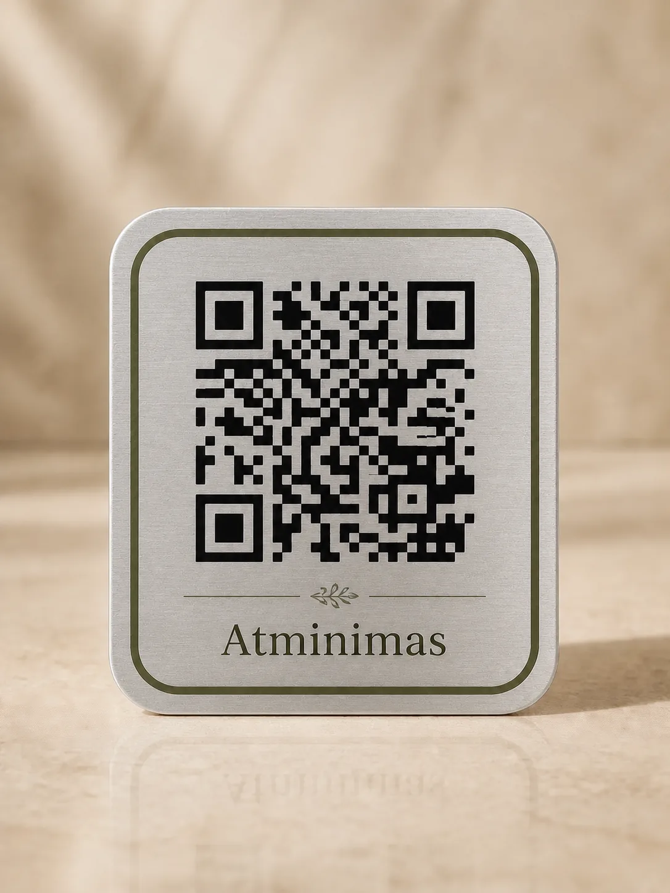
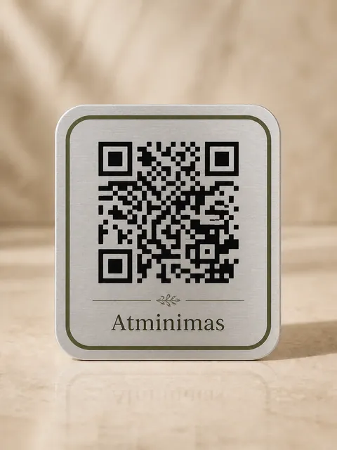

Kapų paieška
Raskite artimojo kapavietę
Įrašykite vardą ir pavardę — parodysime kapines ir koordinates.
Duomenų šaltiniai: vieša CEMETY velionių paieška ir atsarginis Lietuvos atvirų duomenų portalas; VDA duomenims taikoma CC BY 4.0 licencija.

Atminimas
Prisiminimas, kuris išlieka
Atminimo kodas – tai ant kapavietės tvirtinama QR lentelė, kuri atveria asmeninį artimojo atminimo puslapį su gyvenimo istorija, nuotraukomis ir prisiminimais.
Nuo ko norite pradėti?
Pasirinkite QR atminimo lentelę arba kapavietės priežiūros paslaugą.
QR atminimo ženklai ir skaitmeniniai puslapiai
Sukurkite ramų, tvarkingą atminimo puslapį su nuotraukomis, vaizdo įrašu, gimimo ir mirties datomis bei epitafija. Graviruota plieno QR atminimo lentelė ant kapavietės leidžia artimiesiems pasiekti istoriją telefonu.

Patvarus ženklas nukreipia į vieną konkretų atminimo puslapį.
Nuotraukos, gyvenimo istorija ir svarbiausi prisiminimai vienoje ramioje erdvėje.
Papildoma pagalba
Šios paslaugos atskirtos nuo atminimo puslapio kūrimo, todėl galėsite ramiai atlikti tik jums reikalingą veiksmą.
Kapų paieška
Įrašykite vardą ir pavardę — parodysime kapines ir koordinates.
Duomenų šaltiniai: vieša CEMETY velionių paieška ir atsarginis Lietuvos atvirų duomenų portalas; VDA duomenims taikoma CC BY 4.0 licencija.
Rūpestis per atstumą
Pasirinkite žvakių uždegimą, gėlių padėjimą arba kapavietės sutvarkymą. Užklausa nieko nekainuoja.
Dažniausiai užduodami klausimai
Jei atsakymo čia nėra, parašykite mums – atsakome per 1 darbo dieną.
Nuskenavus ant lentelės išgraviruotą QR kodą telefonu atidaromas konkretus atminimo puslapis su jūsų parinktu tekstu, nuotraukomis ir kitais prisiminimais.
Ne. Išankstinis užsakymas kainuoja 0 EUR, mokėjimo kortelės duomenų neprašome ir jis neįpareigoja pirkti. Atminimo puslapio juodraštį galėsite kurti atskirai.
Taip. Puslapio savininkas kliento zonoje gali redaguoti tekstus, nuotraukas ir puslapio matomumą.
Parduotuvėje rodoma orientacinė kaina. PREORDER priimame iki 2026 m. spalio 31 d.; iki tada papildomų naujienų nesiųsime. Nuo lapkričio 1 d. susisieksime dėl galutinės kainos, termino ir pristatymo. Išankstinio užsakymo metu nieko mokėti nereikia.
Atidarykite kapavietės priežiūros užklausą, pasirinkite priežiūros darbus ir nurodykite vietą. Įprastai atsakome per 1 darbo dieną; pati užklausa dar nėra apmokamas užsakymas.